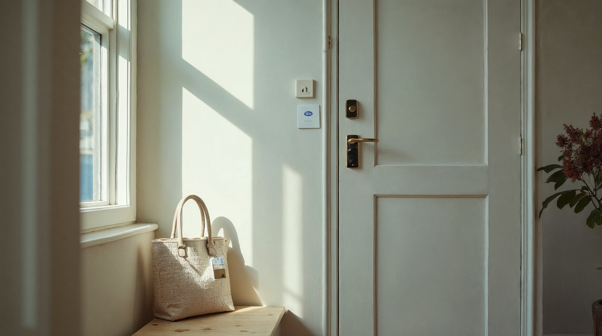
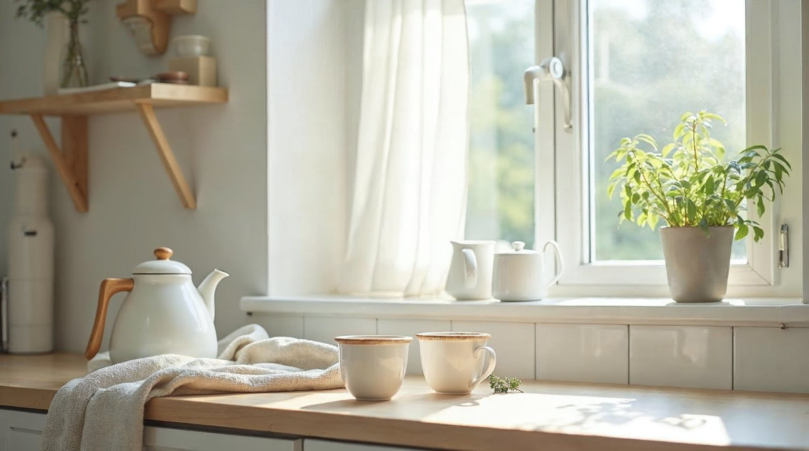
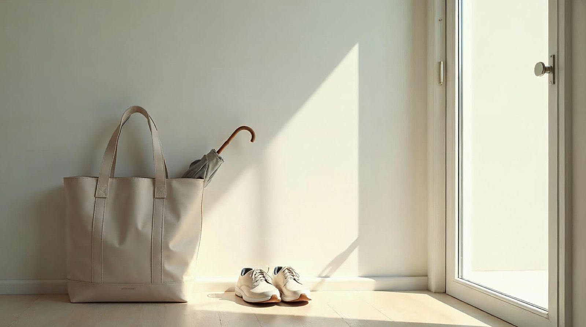
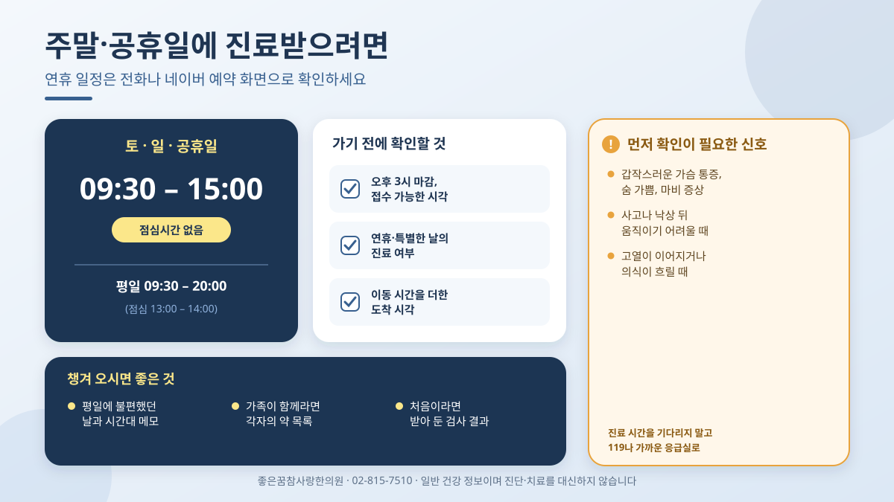

이종호 한의사 감수좋은꿈참사랑한의원 대표원장 (한의사 면허번호 19769)발행 2026-11-23 · 수정 2026-11-26
이 글의 차례
- 왜 주말 방문은 미리 확인하면 좋을까요
- 주말·공휴일 진료 시간
- 가기 전에 확인할 것
- 주말 진료와 평일 진료는 무엇이 다른가요?
- 주말 하루를 이렇게 보내면 몸이 덜 지칩니다
- 왜 주말이 되면 불편이 더 또렷하게 느껴질까요
- 오전과 오후 중 언제 오면 좋을까요?
- 기다리는 시간을 줄이려면 어떻게 하면 좋을까요?
- 주말에 일하는 분은 언제 오면 좋을까요?
- 연휴 앞뒤에는 무엇이 달라지나요?
- 가족이 함께 올 때는 어떻게 준비하면 좋을까요?
- 일상에서 먼저 해 볼 수 있는 것
- 주말 방문 전에 스스로 점검해 보세요
- 한의원에서 함께 살필 수 있는 경우
- 처음 오신 날 진료실에서는 무엇을 여쭙나요?
- 다음 방문은 평일과 주말 중 언제로 잡을까요?
- 주말 운동 뒤 뻐근할 때 집에서 살펴볼 것
- 일요일 밤 잠이 오지 않을 때는 어떻게 할까요?
- 주말에 치료받은 뒤에는 이렇게 지내세요
- 주말까지 기다리지 않아도 되는 경우가 있나요?
- 주말 동안의 불편은 이렇게 기록해 두세요
- 오시기 전에 챙겨 두면 좋은 것
- 이런 증상은 먼저 확인이 필요합니다
주말·공휴일에 오실 때는 오후 3시 마감과 연휴 일정만 미리 확인하면 됩니다. 평일에 시간을 내기 어려운 분은 주말이나 공휴일 진료를 찾습니다. 좋은꿈참사랑한의원은 토요일, 일요일, 공휴일에도 진료합니다.
토요일 아침, 알람 없이 눈을 떴는데 허리가 뻐근합니다. 주중 내내 "주말에 가 봐야지" 하고 미뤄 둔 불편이지요. 막상 주말이 되면 장도 봐야 하고 아이 일정도 챙겨야 해서, 한의원은 또 다음 주로 밀리기 쉽습니다.
저는 그 마음을 잘 압니다. 쉬는 날 하루를 쪼개 진료실까지 오시는 건 생각보다 큰 결심입니다. 그래서 주말에 오시는 분들이 헛걸음하지 않고, 짧은 진료 시간 안에서도 하고 싶은 이야기를 다 하고 가실 수 있도록 미리 챙길 것을 정리해 두었습니다.
왜 주말 방문은 미리 확인하면 좋을까요
- 주말은 진료 시간이 오전 9시 30분부터 오후 3시까지로 평일보다 짧습니다.
- 평일에 미뤄 둔 불편을 주말에 상담하려는 분이 많아 시간대에 따라 기다릴 수 있습니다.
- 가족이 함께 오는 경우가 많아 한 번에 여러 분이 상담받을 때는 시간이 더 걸릴 수 있습니다.
- 주말에 오실 때는 오전에 오시면 오후 3시 마감까지 시간이 넉넉합니다.
주말·공휴일 진료 시간
- 토요일·일요일·공휴일: 오전 9시 30분부터 오후 3시까지
- 점심시간 없음
- 평일은 오전 9시 30분부터 저녁 8시까지(점심 13시~14시)

가기 전에 확인할 것
- 오후 3시가 마감이라 평일보다 일찍 닫으니, 늦은 오후에 가려면 접수 가능한 시각을 먼저 확인하세요.
- 연휴나 특별한 날의 진료 여부는 달라질 수 있으니 방문 전에 전화나 네이버 예약 화면으로 확인하세요.
- 이동 시간을 더해 도착 시각을 넉넉히 잡으세요. 노량진역에서 오시면 동작 01번 마을버스 배차 간격이 주말에는 약 7분입니다.
주말 진료와 평일 진료는 무엇이 다른가요?
진료의 순서는 같습니다. 이야기를 듣고, 진맥하고, 필요하면 진찰을 더한 뒤 그날 필요한 치료를 고릅니다. 주말이라고 해서 진료를 줄이거나 서두르지 않습니다. 다른 점은 끝나는 시각이 이르다는 것, 그리고 점심시간 없이 이어진다는 것입니다.
평일 저녁에 오시던 분이 주말에 오셔도 지난 기록을 보며 이어서 여쭙습니다. 요일이 바뀌어도 처음부터 다시 설명하실 필요는 없습니다. 지난번 뒤로 달라진 점만 말씀해 주시면 됩니다.
그래서 주말에는 도착 시각이 더 중요합니다. 같은 30분 늦음이라도 평일 저녁에는 여유가 남지만, 주말 오후 2시 반에 도착하면 이야기를 충분히 나누기 빠듯할 수 있습니다. 처음 오신다면 이 점을 꼭 기억해 주세요.
주말 하루를 이렇게 보내면 몸이 덜 지칩니다
쉬는 날일수록 몸에는 일정한 박자가 필요합니다. 저는 잘 먹고, 잘 자고, 잘 싸고, 마음 편하고, 몸 따뜻하게, 이 다섯 가지를 회복의 바탕으로 봅니다. 주말은 이 다섯 가지를 평일보다 조금 더 챙길 수 있는 날입니다.
아침에는 평소 시각 즈음에 일어나 커튼을 열고 햇빛을 보세요. 따뜻한 물 한 잔과 가벼운 아침을 드시고, 오전에 30분쯤 동네를 걸어 보세요. 상도동은 언덕이 많아 걷는 것만으로도 다리에 힘이 들어갑니다. 숨이 조금 찰 정도면 충분하고, 무릎이 불편한 날은 평지 위주로 걸으세요.
오후에는 누워서 휴대폰을 보는 시간을 줄이고, 해가 지기 전에 몸을 한 번 더 움직여 주세요. 저녁은 너무 늦지 않게, 과식하지 않게 드시는 것이 일요일 밤 잠을 지키는 데 도움이 됩니다.
왜 주말이 되면 불편이 더 또렷하게 느껴질까요
평일에는 일에 집중하느라 몸의 신호를 뒤로 미룹니다. 긴장이 풀리는 주말이 되어서야 목이 굳어 있었다는 것, 허리가 묵직했다는 것을 알아차리게 되지요. 그래서 주말 아침에 불편이 더 크게 느껴지는 분이 많습니다.
잠의 리듬도 한몫합니다. 주중에 모자란 잠을 주말에 몰아서 자면 오히려 몸이 무겁고 머리가 띵할 수 있습니다. 예를 들어 토요일에 낮 12시까지 자고 일어난 경우, 하루 종일 개운하지 않고 일요일 밤에는 잠이 오지 않아 월요일이 더 힘들어지기도 합니다.
몰아서 하는 운동도 그렇습니다. 평일에 거의 움직이지 않다가 주말에 등산이나 축구를 길게 하면, 쓰지 않던 근육이 한꺼번에 일을 하게 됩니다. 이런 경우 일요일 저녁이나 월요일 아침에 종아리, 무릎, 허리가 뻐근해지기 쉽습니다.
오전과 오후 중 언제 오면 좋을까요?
처음 오시는 날이라면 오전을 권합니다. 접수하고 이야기를 듣고 진맥하고, 필요하면 진찰을 더하는 데 시간이 걸리기 때문입니다. 마감이 가까워지면 저도 마음이 급해지고, 오신 분도 시계를 보게 되니 이야기가 짧아질 수 있습니다.
다시 오시는 분은 지난번 이야기에서 이어 가니 오전이든 오후든 편한 때 오셔도 됩니다. 다만 오후 늦게 오실 생각이라면 그날 접수 가능한 시각을 먼저 전화로 여쭤 보세요. 주말은 점심시간 없이 진료하지만, 끝나는 시각은 평일보다 이릅니다.
기다리는 시간을 줄이려면 어떻게 하면 좋을까요?
주말에는 시간대에 따라 기다리실 수 있습니다. 미리 네이버 예약이나 전화로 시간을 잡아 두시면 일정을 가늠하기 쉽습니다. 예약할 때 처음 방문인지, 가족 몇 분이 함께 오시는지 알려 주시면 그만큼 시간을 고려해 안내해 드립니다.
대기하는 동안 할 일도 있습니다. 불편한 곳과 시작된 때, 드시는 약을 메모로 한 번 더 정리해 보세요. 진료실에 들어오셔서 "뭐부터 말씀드려야 하지" 하고 망설이는 시간이 줄어, 짧은 주말 진료 시간을 더 알차게 쓸 수 있습니다.
주말에 일하는 분은 언제 오면 좋을까요?
가게를 운영하거나 교대 근무를 하는 분은 오히려 주말이 더 바쁩니다. 이런 경우에는 평일 중 쉬는 날이나 평일 저녁 시간을 활용해 보세요. 평일은 오전 9시 30분부터 저녁 8시까지, 점심시간 13시~14시를 빼고 진료합니다.
근무 시간이 매주 바뀐다면 진료를 마칠 때 다음 근무표를 보며 함께 날짜를 잡아도 됩니다. 일정이 바뀌면 미리 전화로 알려 주세요.
연휴 앞뒤에는 무엇이 달라지나요?
명절이나 긴 연휴 앞에는 "쉬는 동안 아프면 어쩌나" 싶어 미리 오시려는 분이 많습니다. 연휴 중 진료 여부는 해마다 달라질 수 있으니, 날짜가 가까워지면 전화나 네이버 예약 화면으로 꼭 확인하고 오세요.
연휴에는 생활 리듬이 크게 흔들립니다. 장거리 운전, 오래 앉아 전 부치기, 늦게까지 이어지는 식사 자리가 겹치면 허리와 소화가 한꺼번에 불편해지기 쉽습니다. 연휴 뒤에 오신다면 어떤 일을 몇 시간쯤 했는지 떠올려 오시면 상담이 훨씬 구체적이 됩니다.
가족이 함께 올 때는 어떻게 준비하면 좋을까요?
주말에는 부부가 함께, 또는 아이나 부모님을 모시고 오시는 경우가 많습니다. 한 분씩 이야기를 듣고 진맥하기 때문에, 함께 오시는 분이 많을수록 시간이 더 걸린다는 점을 감안해 도착 시각을 앞당겨 주세요.
각자 불편한 곳과 드시는 약을 따로 메모해 오시면 좋습니다. 예를 들어 아이는 잠과 식사, 어르신은 복용 약과 걸음, 본인은 통증 부위처럼 나눠 적어 오시면 대기하는 동안 정리할 시간이 줄어듭니다. 보호자가 대신 설명할 때도 메모가 있으면 빠뜨리는 것이 적습니다.

일상에서 먼저 해 볼 수 있는 것
- 주말에도 일어나는 시각을 평일과 한 시간 안쪽으로 맞추기
- 운동은 주말에 몰아서 하기보다 평일에 조금씩 나누기
- 늦잠 대신 오후에 20분 안쪽으로 짧게 눈 붙이기
- 주말 첫 끼니를 거르지 말고 평소 시각에 가볍게 먹기
- 등산이나 운동 전후로 종아리와 허벅지를 천천히 늘이기
주말 방문 전에 스스로 점검해 보세요
아래 가운데 해당하는 것이 있다면 진료 때 함께 말씀해 주세요.
- 주말 아침이 평일보다 더 무겁고 개운하지 않다
- 일요일 밤마다 잠들기가 어렵다
- 주말 운동 뒤 이틀 넘게 뻐근함이 남는다
- 평일 내내 참은 통증이 쉬는 날 더 크게 느껴진다
- 주말에는 끼니 시각이 들쭉날쭉하고 속이 더부룩하다
두세 가지가 겹친다면 주말과 평일의 리듬 차이가 몸에 부담을 주고 있을 수 있습니다. 하나씩 고치려 애쓰기보다, 일어나는 시각 하나만 먼저 맞춰 보세요. 기상 시각이 자리를 잡으면 끼니와 잠드는 시각도 조금씩 따라옵니다. 그래도 불편이 이어지면 진료실에서 함께 살펴보겠습니다.
한의원에서 함께 살필 수 있는 경우
- 평일에 일하느라 미뤄 둔 통증이 주말에 더 불편하게 느껴지는 경우 어떤 동작에서 아픈지 함께 살핍니다.
- 주말에 몰아서 자고 월요일이 힘든 경우 잠의 모양과 생활 리듬을 함께 살핍니다.
- 가족이 함께 오는 경우 각자의 불편을 나누어 여쭙니다.
- 주말에 운동을 몰아서 하고 월요일에 몸이 뻐근한 경우 운동량과 쉬는 시간을 함께 살핍니다.
처음 오시면 접수한 뒤 원장이 모든 분께 맥부터 짚으며 불편한 곳과 생활을 여쭙습니다. 필요하면 혀와 배를 살피거나 초음파로 확인하고, 상태에 맞는 치료와 다음 방문 안내로 이어집니다. 다시 오시면 지난번 이야기부터 이어서 여쭙습니다.
처음 오신 날 진료실에서는 무엇을 여쭙나요?
가장 불편한 곳과 시작된 때를 먼저 듣습니다. 그다음 잠은 어떤지, 밥은 잘 드시는지, 대소변은 편한지, 몸이 찬 편인지를 여쭙습니다. 주말에 오셨다면 평일과 주말의 리듬이 어떻게 다른지도 함께 여쭤 봅니다.
진맥은 모든 분께 합니다. 서두르다 숨이 찬 채로 들어오셨다면 잠시 쉬었다가 맥을 짚습니다. 통증 부위를 눈으로 확인할 필요가 있다고 판단되면 초음파로 살피기도 합니다. 그 뒤 오늘 받을 치료와 집에서 지켜볼 점을 말씀드립니다.
다음 방문은 평일과 주말 중 언제로 잡을까요?
평일 저녁에 시간을 낼 수 있다면 평일과 주말을 섞어도 됩니다. 평일은 저녁 8시까지 진료하니 퇴근길에 들르기도 합니다. 주말에만 오실 수 있다면 그 간격에 맞춰 집에서 해 볼 것을 조금 더 자세히 알려 드립니다.
어느 쪽이든 무리하지 않고 꾸준히 오실 수 있는 리듬이 중요합니다. 일정이 불규칙하다면 진료를 마칠 때 다음 주 일정을 함께 보며 정해 보세요.
주말 운동 뒤 뻐근할 때 집에서 살펴볼 것
운동 다음 날 근육이 뻐근한 것은 흔한 일입니다. 다만 그 뻐근함이 어디에, 얼마나 오래 남는지는 살펴볼 만합니다. 양쪽 허벅지가 고르게 당기는 것과 한쪽 무릎 안쪽만 콕 집어 아픈 것은 이야기가 다르기 때문입니다.
- 아픈 곳이 넓게 퍼져 있는지, 손가락 하나로 짚을 수 있는 자리인지
- 계단을 오를 때와 내려갈 때 중 언제 더 불편한지
- 뻐근함이 이틀, 사흘이 지나도 줄지 않는지
- 그 운동을 할 때마다 같은 자리가 불편해지는지
이런 점을 적어 오시면 진료실에서 어떤 동작을 먼저 확인할지 정하기 쉽습니다. 다음 주말 운동을 앞두고 있다면 운동량과 쉬는 시간을 어떻게 나눌지도 함께 이야기해 봅니다.
일요일 밤 잠이 오지 않을 때는 어떻게 할까요?
일요일 밤이면 내일 출근이나 등교 생각에 마음이 먼저 바빠집니다. 낮에 늦잠을 잤다면 몸은 아직 졸리지 않은데 머리는 자야 한다고 재촉하지요. 이럴 때 억지로 누워 시계를 보면 잠은 더 멀어집니다.
잠이 오지 않으면 잠시 일어나 어두운 불빛 아래에서 따뜻한 물을 마시거나 가볍게 몸을 풀어 보세요. 졸음이 다시 오면 그때 누우시면 됩니다. 이런 밤이 자주 반복된다면 주말의 잠 시간과 일요일 밤 잠든 시각을 함께 적어 와 주세요.
주말에 치료받은 뒤에는 이렇게 지내세요
침을 맞은 날에는 과음과 무리한 운동을 피해 주세요. 주말이라 저녁 약속이 있거나 운동 계획이 있다면 진료 때 미리 말씀해 주시면 그날 치료와 생활 안내를 거기에 맞춰 드립니다.
치료 뒤 몸이 나른하게 느껴질 수 있습니다. 그날은 일정을 빡빡하게 잡지 말고, 따뜻하게 씻고 일찍 쉬어 보세요. 다음 날 아침 불편이 어떻게 달라졌는지 한 줄 적어 두시면 다음 진료 때 이어서 살피기 좋습니다.
주말까지 기다리지 않아도 되는 경우가 있나요?
불편이 하루하루 커지거나, 잠을 설칠 만큼 신경이 쓰인다면 주말까지 참지 않으셔도 됩니다. 평일에도 저녁 8시까지 진료하니 퇴근길에 들르실 수 있습니다. 미루는 동안 몸은 아픈 쪽을 피하는 자세를 익히고, 그 자세가 또 다른 곳을 불편하게 만들기도 합니다.
반대로 가볍게 뻐근한 정도라면 주말까지 위의 생활 요령을 해 보시고, 그동안 달라진 점을 메모해 오셔도 좋습니다. 그 메모가 첫 진료의 좋은 출발점이 됩니다.
주말 동안의 불편은 이렇게 기록해 두세요
거창한 기록은 필요 없습니다. 휴대폰 메모장에 하루 한 줄이면 충분합니다. 잘 쓰려고 애쓰기보다 빠뜨리지 않는 것이 더 중요합니다. 몇 시에 일어났는지, 무엇을 했는지, 어디가 언제 불편했는지를 적어 두세요.
예를 들어 "토 10시 기상, 오후 등산 3시간, 저녁부터 무릎 앞쪽 시큰"처럼 적으면 됩니다. 이런 메모가 두세 주 쌓이면 어떤 활동 뒤에 불편이 오는지 함께 짚어 보기 쉽습니다.

오시기 전에 챙겨 두면 좋은 것
- 평일 동안 불편했던 날과 시간대 메모
- 주말에 몰아서 잔 시간과 월요일 컨디션
- 가족이 함께 온다면 각자의 불편과 복용 약 목록
- 처음 방문이라면 받아 둔 검사 결과
이런 증상은 먼저 확인이 필요합니다
- 갑작스러운 가슴 통증, 숨 가쁨, 마비 증상이 있는 경우
- 사고나 낙상 뒤 움직이기 어려운 경우
이런 신호가 있으면 한의원보다 가까운 병원이나 응급실을 먼저 찾으세요.

생활에서 해 볼 것
- 주말에도 일어나는 시각을 평일과 한 시간 안쪽으로 맞추기
- 운동은 주말에 몰아서 하기보다 평일에 조금씩 나누기
- 늦잠 대신 오후에 20분 안쪽으로 짧게 눈 붙이기
한의원에서 함께 살필 것
- 평일에 일하느라 미뤄 둔 통증이 주말에 더 불편하게 느껴지는 경우 어떤 동작에서 아…
- 주말에 몰아서 자고 월요일이 힘든 경우 잠의 모양과 생활 리듬을 함께 살핍니다.
- 가족이 함께 오는 경우 각자의 불편을 나누어 여쭙니다.
먼저 확인이 필요한 신호
- 갑작스러운 가슴 통증, 숨 가쁨, 마비 증상이 있는 경우
- 사고나 낙상 뒤 움직이기 어려운 경우
한눈에 보는 표
| 구분 | 핵심 |
|---|---|
| 생활에서 해 볼 것 | 주말에도 일어나는 시각을 평일과 한 시간 안쪽으로 맞추기 운동은 주말에 몰아서 하기보다 평일에 조금씩 나누기 |
| 한의원에서 함께 살필 것 | 평일에 일하느라 미뤄 둔 통증이 주말에 더 불편하게 느껴지는 경우 어떤 동작에서 아픈지 함께 살핍니다. 주말에 몰아서 자고 월요일이 힘든 경우 잠의 모양과 생활 리듬을 함께 살핍니다. |
| 먼저 확인이 필요한 신호 | 갑작스러운 가슴 통증, 숨 가쁨, 마비 증상이 있는 경우 사고나 낙상 뒤 움직이기 어려운 경우 |
자주 묻는 질문
일요일에도 진료하나요?
네. 토요일, 일요일, 공휴일 모두 오전 9시 30분부터 오후 3시까지 진료합니다.
주말 진료에도 점심시간이 있나요?
주말과 공휴일에는 점심시간 없이 진료합니다.
주말에도 예약을 받나요?
네이버 예약이나 전화로 문의할 수 있습니다. 시간대는 방문 전에 확인하세요.
주말에 처음 방문해도 되나요?
네. 처음 오시면 접수와 상담에 시간이 걸리니 오후 3시 마감보다 여유 있게 도착하시길 권합니다.
명절 연휴에도 진료하나요?
연휴 진료 여부는 해마다 달라질 수 있어, 날짜가 가까워지면 전화(02-815-7510)나 네이버 예약 화면으로 확인해 주세요.
좋은꿈참사랑한의원은 재진 때 지난번 이야기부터 이어서 여쭙니다. 진료시간과 예약은 오시는 길에서 확인하세요.
어디서 상담받을 수 있나요?
좋은꿈참사랑한의원은 서울 동작구 만양로2길 2 신성빌딩 3층·5층(서울 동작구 상도동, 7호선 상도역 3번 출구 근처)에 있습니다. 한의사 3명(이종호 대표원장, 조영기 수석진료원장, 정원영 진료원장)이 진료합니다. 진료시간은 평일 09:30~20:00(점심 13:00~14:00), 토·일·공휴일 09:30~15:00이며, 방문 전 전화로 확인을 권합니다. 예약은 네이버 예약, 카카오톡 상담, 전화 02-815-7510로 받습니다.
이 글은 일반적인 건강 정보이며 개인의 진단이나 치료를 대신하지 않습니다. 증상이 있거나 복용 중인 약이 있다면 진료를 통해 확인하세요. 치료 효과는 개인마다 다를 수 있습니다.
작성 기준: 일반적으로 알려져 있는 건강 정보를 참고해 정리했습니다(대표원장 감수). 증상 기록은 1~2주 동안 하루 1회, 비슷한 시간에 적어 오시면 지난 상태와 비교하기 쉽습니다.